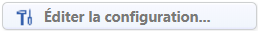
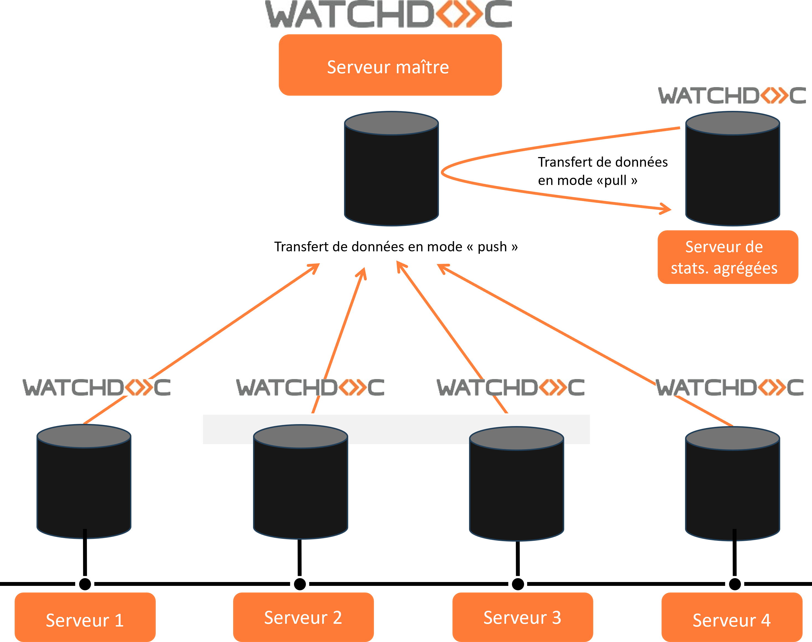
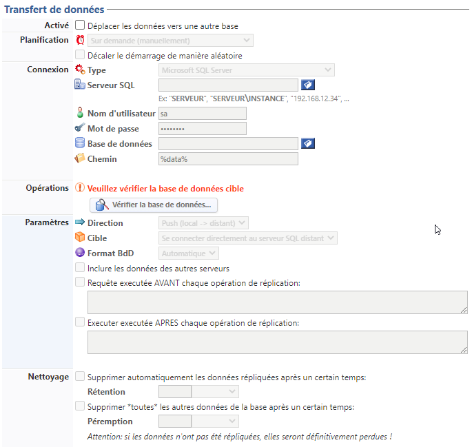
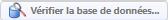
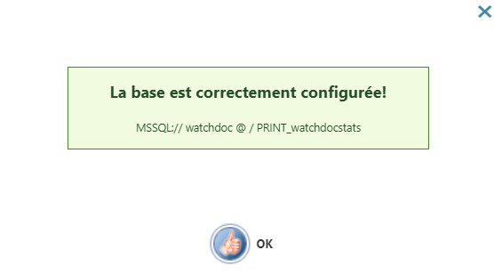
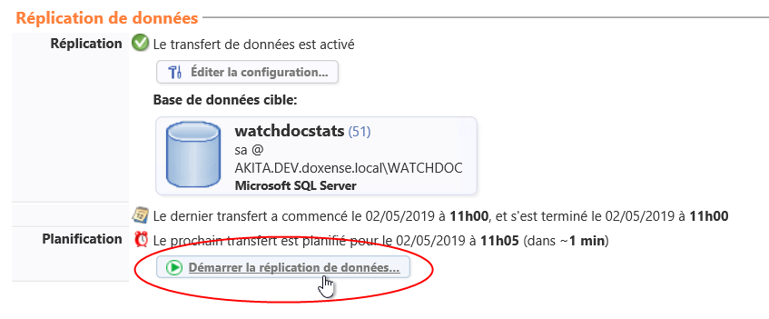
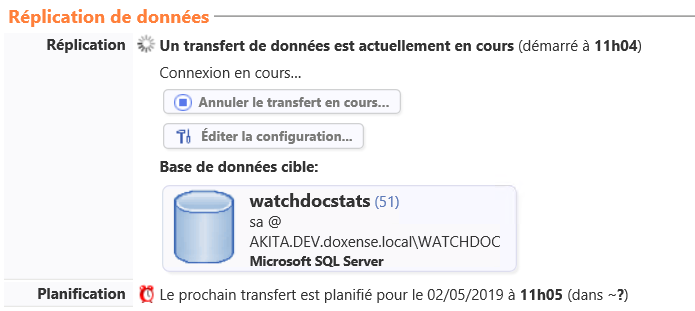

Base de données statistiques Watchdoc - Transférer
Principe
Dans Watchdoc, les données statistiques sont enregistrées dans une base de données dédiée et localisée sur un serveur spécifique.
Il peut être nécessaire de transférer ces données statistiques d'un serveur à l'autre.
Par exemple, dans le cas d'une configuration en domaine (master/slaves), il est utile de regrouper dans une seule base (master) les données issues de différents serveurs (slaves) afin de disposer de statistiques globales (du domaine complet). Cela facilite ainsi l'analyse de l'activité d'impression du domaine complet.
La fonction de transfert permet l'envoi périodique des données statistiques d'un serveur vers l'autre, soit par une action manuelle, soit automatiquement, à l'aide d'une tâche planifiée.
Les données transférées peuvent ensuite être conservées ou supprimées de leur base d'origine.
Procédure
Activation automatique
Accédez à l'interface d'administration de Watchdoc en tant qu'administrateur ;
-
depuis le Menu principal, section Configuration cliquez sur Configuration avancée ;
-
dans l'interface Configuration avancée, cliquez sur Base de statistiques ;
-
dans l'interface Base de statistiques, cliquez sur le bouton

; -
vous accédez à l'interface Paramètres de connexion à la base de données, section Statistiques,
-
dans la section Transfert de données :
-
Activé : cochez la case pour activer le transfert des données de la base concernée vers une autre base ;
-
Planification : dans la liste déroulante, sélectionnez le mode et la périodicité du transfert de données :
-
Sur demande (manuellement) : pour effectuer le transfert de manière aléatoire et manuel (cf. procédure ci-après) ;
-
Tous les... : choisissez la fréquence à laquelle la base doit être transférée.
-
Décaler le démarrage de manière aléatoire : cochez la case pour faire en sorte que le transfert ait lieu à la fréquence programmée, mais que son lancement ne soit pas démarré à la même heure. Ce paramètre permet d'éviter une surcharge de la bandes-passantes ou des capacités des serveurs lorsque le transfert est activé sur un grand nombre de serveurs ;
-
-
Connexion : indiquez dans cette section tous les paramètres permettant d'accéder au serveur SQL distant avec lequel doit être établi le transfert :
-
Type : dans la liste, sélectionnez le type du serveur de données ;
-
Serveur SQL : précisez le nom du serveur SQL (sauf pour un serveur SQL Lite). Si vous ne connaissez pas le nom du serveur, cliquez sur le bouton
 pour parcourir le réseau afin d'y sélectionner le serveur SQL ;
pour parcourir le réseau afin d'y sélectionner le serveur SQL ; -
Authentification : précisez le type d'authentification souhaité ;
-
Nom d'utilisateur : saisissez le nom du compte d'administration habilité à accéder au serveur ;
-
Mot de passe : saisissez le mot de passe du compte d'administration autorisé à accéder au serveur ;
-
Base de données : indiquez le nom de la base de données statistiques (si elle ne porte pas le nom par défaut) ). Si vous ne connaissez pas le nom de la base de données, cliquez sur le bouton
pour parcourir le réseau afin d'y sélectionner la base ; -
Chemin : pour une base de type SQLite, indiquez le chemin permettant d'accéder au fichier de données ;
-
-
Opérations : cliquez sur le bouton Vérifier la base de données pour tester la connexion avec la base de données dont les paramètres ont été saisis dans la section Connexion.
-
Paramètres : précisez :
-
Direction mode Push : sélectionnez ce mode pour envoyer les données du serveur local vers le serveur distant ou le mode Pull pour transférer les données d'un serveur distant vers le serveur local. Le scénario privilégié est de se placer sur chaque serveur Watchdoc et d'opter pour le transfert en mode Push vers le serveur maître (master).
-
Direction mode Pull : permet notamment d'optimiser le transfert lorsque la base statistiques est agrégée*, mais ce mode doit être manipulé avec précaution : n'hésitez pas à solliciter l'équipe Support Doxense pour toute interrogation à ce sujet.
Dans une configuration en domaine (maître/esclaves - master/slaves) où les serveurs sont nombreux, les statistiques d'utilisation de Watchdoc peuvent devenir encombrantes pour le serveur maître.
Il peut alors être utile de déléguer le travail d'agrégation et d'affichage des données statistiques à un serveur dédié.
Dans ce cas, le transfert peut être programmé entre le serveur d'agrégation et le serveur maître selon le mode "pull" :
-
Cible : la cible à laquelle vous vous connectez est le serveur SQL distant (notez qu'en fonction de la Direction choisie, ce serveur peut être une "cible" ou une "source") :
-
Format BdD : sélectionnez, dans la liste, la version de Watchdoc® dont la base de données cible dépend ;
-
Inclure les données des autres serveurs : cochez la case dans le cas où la base de données statistiques du serveur concerné contient également les données d'autres serveurs, afin qu'elles soient également transférées ;
-
Requête exécutée AVANT/APRES les opérations de réplication : dans ces champs, saisissez une ou plusieurs requêtes SQL soumises à la base de données avant ou après la réplication. Ces requêtes permettent, par exemple, d'appliquer des changements sur les données faisant l'objet de la réplication (noms des utilisateurs, par exemple) ;
-
-
Timeouts : indiquez les délais permettant de limiter le temps de connexion et d'exécution des requêtes ;
-
Nettoyage : précisez, dans cette section, les conditions de rétention, sur le serveur d'origine, des données :
-
supprimer automatiquement les données répliquées : définissez le délai de rétention, sur le serveur d'origine, des données transférées vers une autre base : au-delà de ce délai, les données sont supprimées ;
-
supprimer toutes les autres données : définissez le délai de péremption au-delà duquel toutes les données (qu'elles aient été transférées ou non), sont supprimées.

-
-
Une fois les données saisies, cliquez sur le bouton

.è un message vous indique le résultat de la vérification. En cas d'échec, corrigez les données saisies avant de tenter une nouvelle vérification.

Activation manuelle
Si vous avez opté pour le transfert en mode Manuel, procédez comme suit :
-
dans l'interface Configuration avancée, cliquez sur Base de statistiques ;
-
dans l'interface Base de statistiques, section Réplication de données, cliquez sur le bouton ;

-
un message vous informe que le transfert est en cours :
